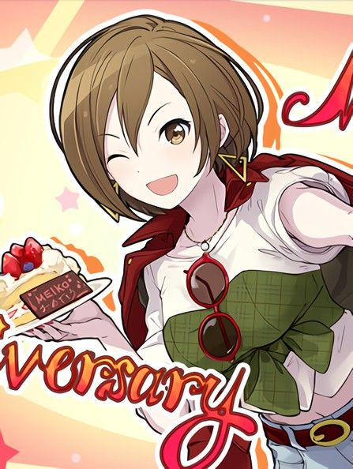
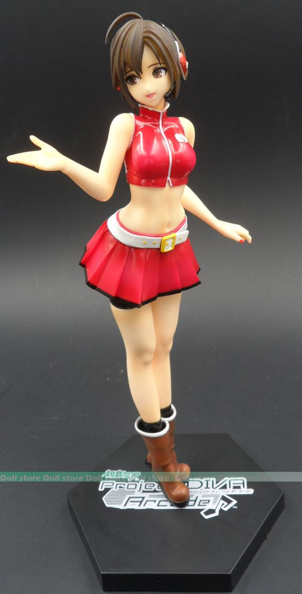
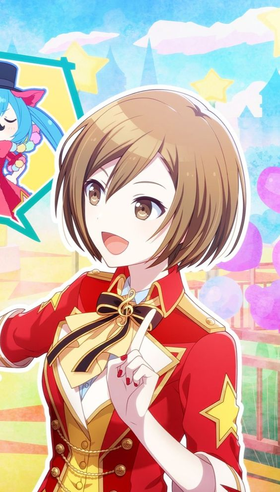

MEIKO
MEIKO (яп.メイコ) - виртуальная певица, помогающая группе Vivid BAD SQUAD.
Описание
MEIKO вместе с остальными виртуальными певцами живут в другом мире под названием Секай, но появляются в реальном мире, чтобы с помощью музыки помочь людям, которым сложно понять истинные чувства. В Уличном Секае она владелица уличного кафе. Вместе со своими помощниками, диджеем Леном и Мику, она помогает Кохане и её друзьям.
Внешность
У MEIKO карие глаза и короткие каштановые волосы. Она носит отдельные чёрный воротник и красные манжеты и короткие коричневые ботинки. Внешность MEIKO приближена к её V3 дизайну, созданному iXima. Она держит микрофон Shure 55SH, который часто фигурирует на её официальных изображениях VOCALOID.
.webp)
История создания
Оригинальный дизайн MEIKO был создан на данный момент уже бывшим членом Crypton Future Media, Inc. Шого Вашизу, более известным под псевдонимом Ваши (яп. わっし)[4][5]. Неизвестно был ли внешний вид смоделирован на основе существующих моделей синтезаторов как это было с последующими персонажами, однако известно, что внешний вид MEIKO не имеет ничего общего с внешностью голосового провайдера. Микрофон же был основан на моделе Sennheiser MD421. Тот дизайн, что красуется на боксарте MEIKO V3 был нарисован художником iXima и в нём микрофон уже основан на модели Shure Brothers 55SH Series II.
